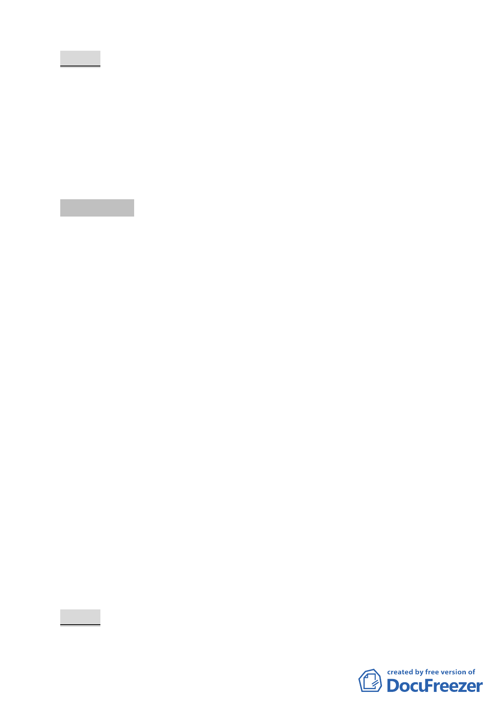

決議：
一、 本案更新地區劃定範圍照案通過。
二、 請依國有財產局來函意見修正計畫書中國有土地上之建物
管理單位為台北市警察局；另第 5 頁整體規劃構想 3.增列「更
新地區東側、西側及北側鄰接計畫道路退縮留設 2 公尺以上
無遮簷人行道」、及第 8 頁圖 3 圖例說明不相符部分，併予
修正。
討論事項 四
案名：劃定臺北市松山區寶清段一小段 496 地號等 57 筆土地為
更新單元
案情概要說明：
一、本更新單元位於臺北市寶清街以東、寶清街 89 巷以南、南京
東路五段 389 巷以西及南京東路五段 389 巷 6 弄以北所圍範
圍之完整街廓，計畫面積 4,993 平方公尺。
二、本案更新單元土地使用分區為第三種商業區及第三種住宅
區，更新單元內土地使用現況目前沿寶清街一樓為零售業與
服務業，其餘均作為住宅使用。更新單元內計有 24 棟 3 至
6 層樓加強磚造及鋼筋混凝土造建築物，大部分屋齡逾 30
年，建物外觀老舊且結構已不符合現行耐震標準。
三、本件係市府以 100 年 5 月 6 日府都新字第 10030090500 號函
送到會。
四、申請單位：簡金龍。
五、辦理單位：臺北市政府。
六、法令依據：都市計畫法第 66 條、都市更新條例第 5 條、第 6
條、第 8 條、第 11 條及臺北市都市更新自治條例第 15 條。
七、本更新單元劃定業經市府審查符合「臺北市都市更新自治條
例」劃定基準及環境評估標準。
決議：
-8-